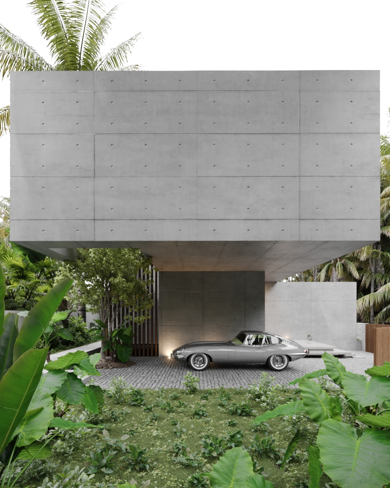
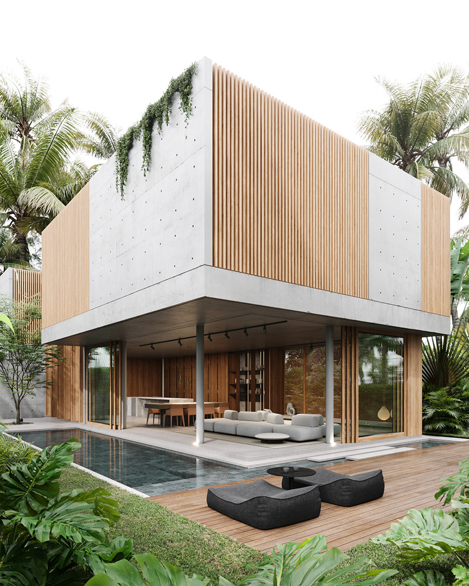
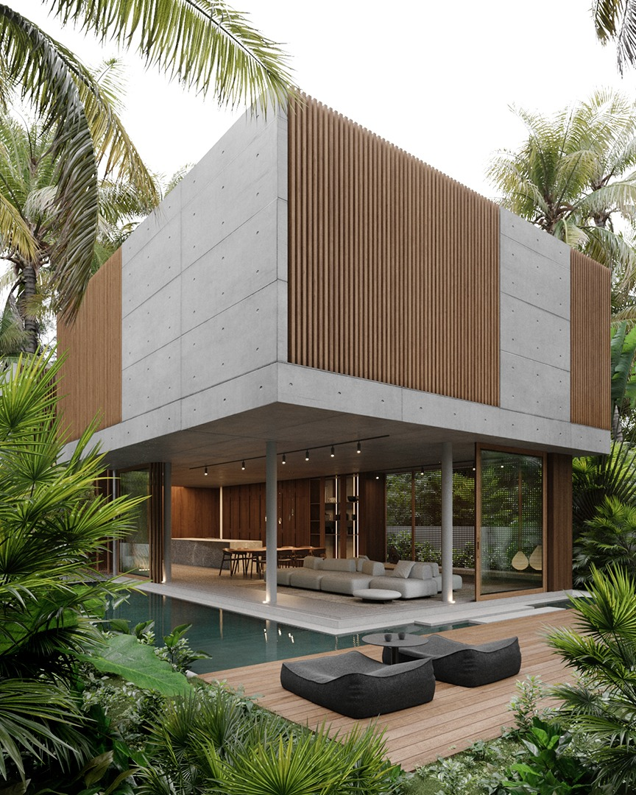
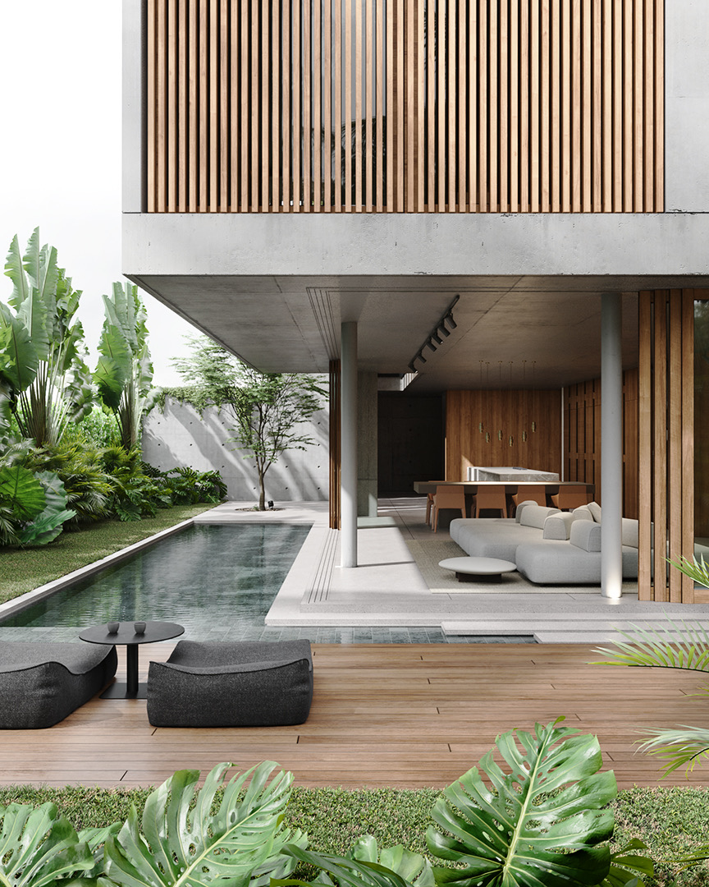
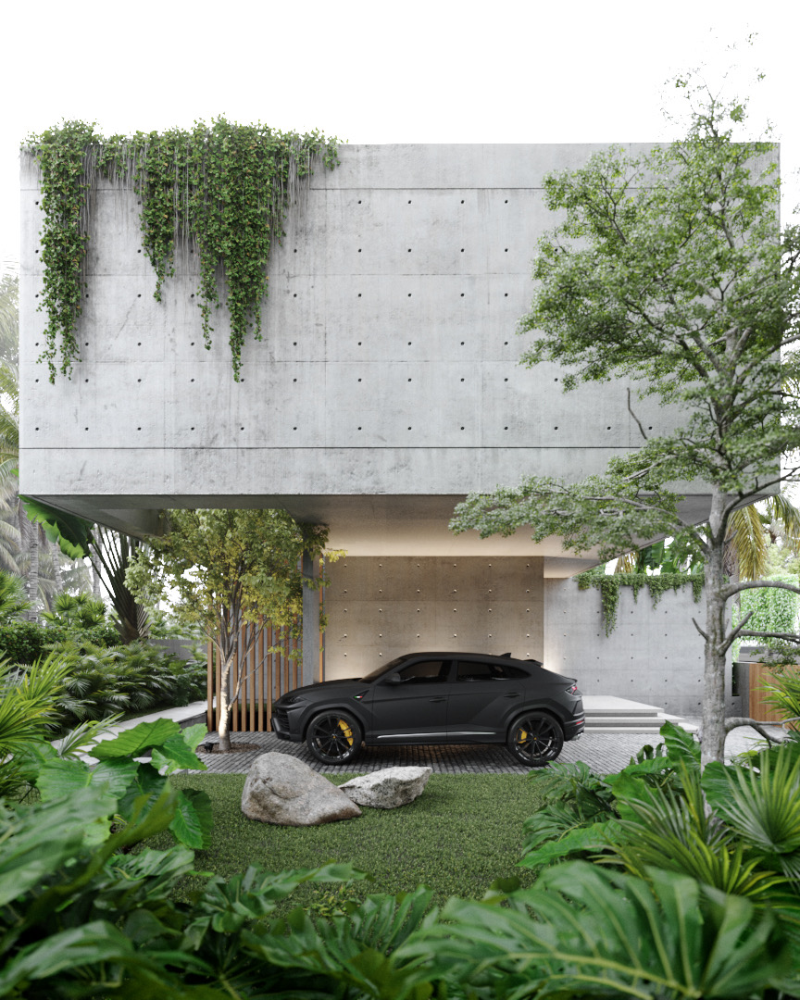
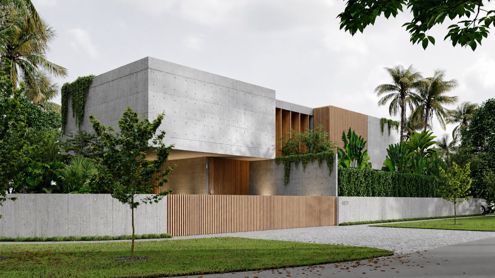

Casa Cherokee
Un volumen puro en paisaje exuberante
CLIMA /
Tropical monzónico
BIOMA /
Bosque costero
TERRENO /
1.000 m²
ÁREA CUBIERTA /
420 m²
UBICACIÓN /
Miami, Florida
Estados Unidos


Este proyecto residencial se concibe como una arquitectura de masa, silencio y resguardo. A través de una geometría simple y rigurosa, el conjunto construye una presencia sólida y contenida, donde la forma expresa estabilidad, fuerza y privacidad.
La vivienda se organiza en dos niveles claramente diferenciados. La planta baja, abierta y permeable, está pensada como espacio social y de encuentro, en relación directa con el jardín. El nivel superior, en cambio, se presenta como un volumen más cerrado y protegido, reservado para la vida íntima.



El uso del hormigón define el carácter del proyecto y, al mismo tiempo, su desempeño. La masa térmica permite estabilizar las condiciones interiores frente a un clima exigente, reduciendo la necesidad de enfriamiento mecánico. En combinación con estrategias de ventilación cruzada, el proyecto logra disminuir la demanda de refrigeración en un 40%.
Los cerramientos de madera, permeables y regulables, permiten el ingreso de aire y luz sin comprometer la privacidad, filtrando las visuales y suavizando la relación entre interior y exterior.
El jardín nativo rodea y acompaña la arquitectura, funcionando como parte activa del sistema ambiental. Genera sombra, protege del asoleamiento y contribuye a la creación de un microclima más fresco y habitable.



Arquitectura de permanencia y solidez.
La casa no se abre indiscriminadamente, sino que controla cuidadosamente el nivel de exposición de cada plano. Así, construye un equilibrio entre liviandad y robustez.


Entre masa y aire, entre robustez y liviandad.